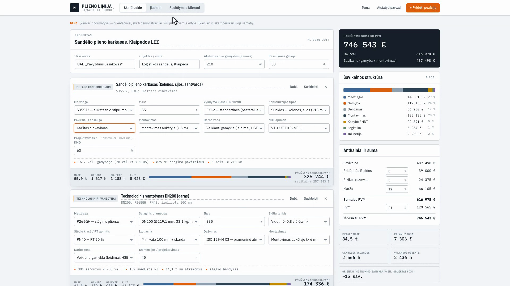
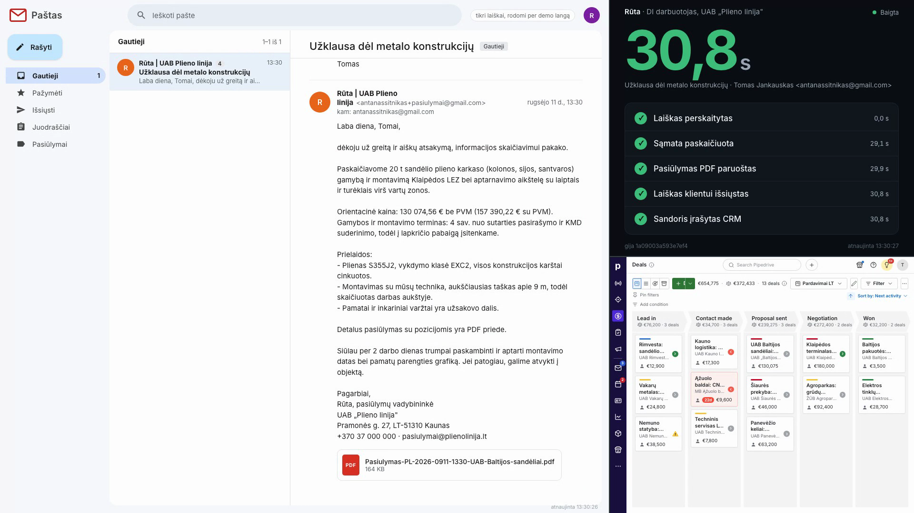
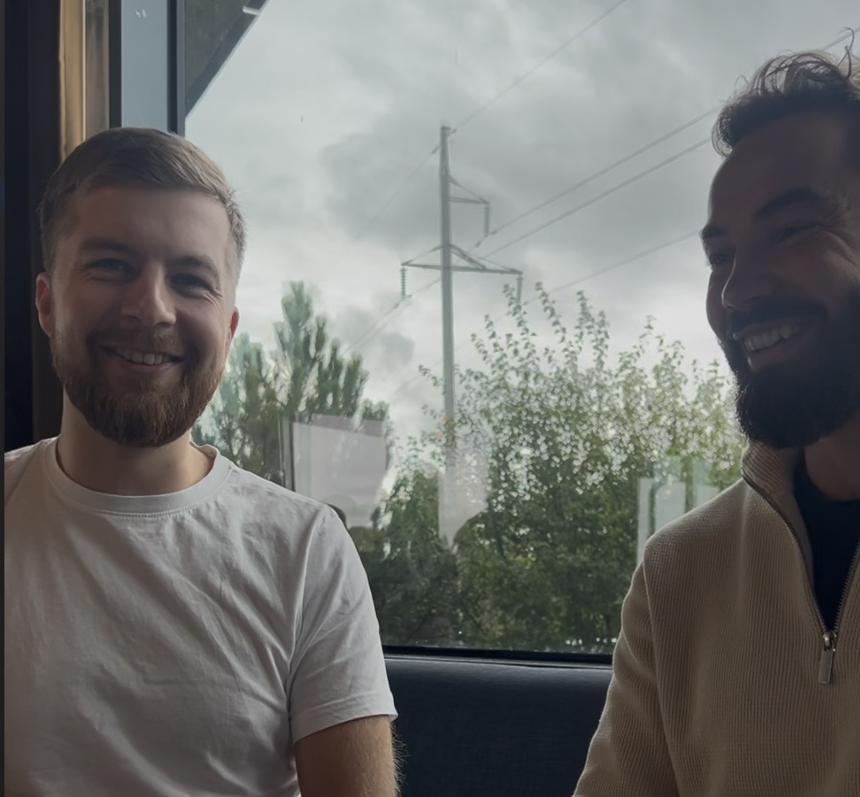
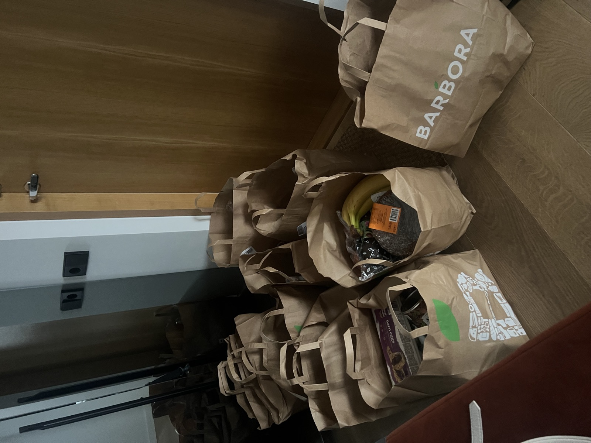

Kaip vadovui atgauti laiką sprendimams.
Vidutinė įmonė į užklausą atsako per 42 val.
Oldroyd, McElheran, Elkington · “The Short Life of Online Sales Leads” · Harvard Business Review
Tai buvome mes.
salesforce.com/news/stories/state-of-sales-report-announcement-2026 · 22 šalys · nuo 2025 m. rugpjūčio iki rugsėjo
Vadovui koučingui lieka 36 min. vienam pardavėjui per savaitę · Sales Management Association, 86,000 pardavėjų
Kodėl krei? Tai didžiausias svertas, kokį esu matęs versle.
krei.lt
Be įrankių sąrašo · ne „DI jūsų nepakeis, pakeis žmogus, kuris naudoja DI“
Lygis 1 iš 5
Jūs klausiate, jis atsako, jis pamiršta. Kiekvienas pokalbis prasideda nuo nulio.
Kitas žingsnis: sukurkite savo pirmą projektą
Jūs: mėgėjas
Patarimai: ekrano nuotraukos · „prieš atsakydamas užduok man klausimus“ · „patikrink savo darbą“ · kalbėkite balsu
Lygis 2 iš 5
Jis žino jūsų pasiūlymą, kainas, klientus, rinką. Tampa kasdieniu įrankiu.
Kitas žingsnis: prijunkite įrankius
Jūs: entuziastas
Patarimai: vienas projektas vienai rutinai · DI jus apklausia, ne jūs rašote · keli kokybiški dokumentai · prašykite rezultato, ne idėjos
Lygis 3 iš 5
Jis skaito jūsų paštą, kalendorių, drive, CRM ir komandos susirašinėjimą.
Kitas žingsnis: užrašykite pasikartojantį procesą
Jūs: integruotojas
Patarimai: prijunkite ką naudojate · naršyklės plėtinys ten, kur nėra jungties · klauskite ką praleidau su klientais ar komanda
Lygis 4 iš 5
Jis dirba taip, kaip jūs. Jūs tik patvirtinate. Apibūdinkite norimą rezultatą, paleiskite, eikite pasidaryti kavos.
Kitas žingsnis: atiduokite rutiną DI komandai
Jūs: vadovas
Patarimai: pirmas savaites tik juodraščiai · išmokykite jį mokytis iš klaidų · įdiekite įgūdžius · deleguokite rutiną, kurią darote 2+ val. per savaitę · klaida = klaida instrukcijoje
Lygis 5 iš 5
Keli agentai dirba, kol jūs miegate. Jų vadovas ryte jums atsiskaito.
Kitas žingsnis: pradėkite nuo parkingo aikštelės
Jūs: orkestruotojas
Patarimai: pirma nuobodžios, nuspėjamos rutinos · nekomunikuoti be jūsų sutikimo · nustatykite jam biudžetą · paieškokite įgūdžių prieš juos kurdami
Iš pirmo į antrą lygį: 30 minučių.
Greitas šuolis: iš pirmo į antrą lygį · Didžiausia vertė 4-5 lygyje · penktame lygyje yra apie 0,04 % naudotojų
Sprendimai, žmonės, prioritetai: jūsų kiekviename lygyje.
Pradėk parkingo aikštelėje: klientų suradimas, laiškų klientams juodraštis, CRM užpildymas, sąmatos skaičiuoklė, dokumentų sutvarkymas.
Stringama ne dėl techninių problemų, o dėl pasitikėjimo. Todėl kelias savaites stebėkite, kaip viskas veikia. Nelieskite.
jūsų pasiūlymas, kainos, klientai, kaip rašote · antras lygis
pastebi laišką, formą, įrašą, jums neprašant
rašo, skaičiuoja, užregistruoja
Atimkite bet kurį vieną ir vėl turite pokalbį.
Demonstracinė įmonė: išgalvota metalo konstrukcijų įmonė · kainoraštis orientacinis · logika tikra

Tonos, plieno markė, danga, objektas, atstumas · už to apie septyniasdešimt įkainių · aprašyta paprasta lietuvių kalba, žmogus kodo nerašė

demo/worker · išmatuota 2026 m. rugsėjo 11 d. · 130,000€ be PVM · išgalvota įmonė · CRM kopija sukurta demonstracijai
7× didesnė tikimybė kvalifikuoti klientą. Greitis ne tik taupo laiką, bet ir uždirba.
HBR 2011 · demo/worker, išmatuota 2026 m. rugsėjo 11 d.
demo/worker · visas procesas aprašytas žmogaus kalba, žmogus kodo nerašė
Marius Kanevičius · verslo plėtra · projektai nuo 100,000€ iki 500,000€
„Esi direktorius ir valdai savo darbuotojus.“
Įrašytas pokalbis, 2026 m. rugsėjis · krei.lt/istorijos · Mariaus žodžiai, ne krei matavimas · pirmus laiškus rašė DI, uždarė Marius

„Metus laiko turėjau ChatGPT... na, primityvus įrankis. Jis nieko negali padaryti: išversti tekstą gali arba parašyti laišką, bet čia ne įrankis, jis nieko nemoka. Vos jį įsirašęs pamačiau, ką jis sugeba, ir iškart nutraukiau ChatGPT prenumeratą, realiai ištryniau ir nebesinaudoju.“
„Man auditą padarė per 10 minučių. Nusiunčiau auditorei, ji tiesiog atrašė „perfect“. Prieš tai man tai būtų trukę savaitę. Aš buvau šoke, kai pamačiau. Realiai, dešimt minučių, nemeluoju.“
„Stabiliai sutaupo mažiausiai keturias valandas per dieną, tikrai, gal net ir daugiau.“
„Man šitas įrankis atvedė naujų klientų. Pirmą sandorį uždariau 200,000, visa komanda vyksta į Olandiją, dar keli kontraktai derinami. Bet čia tik pradžiai: iš to kliento viskas augs, augs ir augs.“
krei.lt/istorijos · gyvas pokalbis su Mariumi, 2026 m. rugsėjis
„Man patinka, kad jis apdoroja CRM bazę ir palaiko komunikaciją su mano esamais klientais, padaro follow-up. DI išanalizavo, kad yra senų nesukontaktuotų klientų, ir prašau, dar keli užsakymai įkrito.“
„Aš esu vienas, o padarau keturių žmonių darbą. Tarsi turėčiau keturis žmones dar aplink šalia. Keturis, ir mes darom vieną tą patį darbą.“
„Didžiausias mano skausmas yra dokumentacija. Aš mėgstu šnekėti, dalyvauti derybose, ieškoti naujų klientų, čia mano variklis. Šitas įrankis man taip stipriai išsprendžia šį skausmą. Ir CRM'as: CRM'o pildymas yra toks peilis, toks skausmas, o jis visa tai padaro. Pamiršk CRM'o laikus.“
„Kam rekomenduočiau? Aš galvoju, kam nerekomenduočiau, nes rekomenduočiau tikrai visiems. Nesvarbu, ar tu vadovas, ar HR'as, ar pardavėjas.“
„Jeigu būčiau žinojęs, kokią vertę man atneša, tikrai nepagailėčiau tūkstančių, gal net ir dešimčių tūkstančių. Nes aš suprantu, kokią naudą tai atneša organizacijai ir tau kaip darbuotojui.“
„Tu esi kaip mini UAB'as, tu esi direktorius ir valdai darbuotojus aplink save. Tai čia yra nerealus jausmas.“
Nori pilno pokalbio? Susisiek su manimi arba paklausk paties Mariaus.
krei.lt/istorijos · gyvas pokalbis su Mariumi, 2026 m. rugsėjis
krei.lt/istorijos · DI nekėlė kainos ir nieko nepardavė: jis parodė, kodėl žmonės perka; pasiūlymą ir scenarijų perrašė žmonės · šeši mėnesiai
Neturiu daugiau laiko: nedirbu mažiau, tiesiog padarau daugiau ir greičiau. Likusį laiką skiriu tam, ką kol kas gali tik žmogus.
Iš mano patirties, 2026 m. · tai, ką kol kas gali tik žmogus
Žmona paprašė DI sudaryti savaitės receptus, nueiti į Barborą, sudėti krepšelį ir nupirkti, ko reikia. Be kiekių, be biudžeto, be konteksto.

Tikras įvykis · DI be kiekių, biudžeto ir konteksto padarė tiksliai tai, ko prašyta
Viskas šįvakar laikosi ant vieno: DI žino verslą.
Pradžiai užtruksite 30 min. Vėliau pridėsite daugiau
Be aprašo ir instrukcijų gausite tai, ką gauna 95% vartotojų: atliktą užduotį, bet ne taip, kaip jums reikia
Master promptas, projekto instrukcijos ir failų sąrašas. Užpildote formą, gaunate viską.
apie 30 min · Claude arba ChatGPT · rytoj ryte
užpildote formą, gaunate tekstą
jis apklausia jus po vieną klausimą
kainynas, geriausi laiškai, master promptas, kurį jis parašys
Iš pirmo lygio į antrą · visos infrastruktūros pamatas